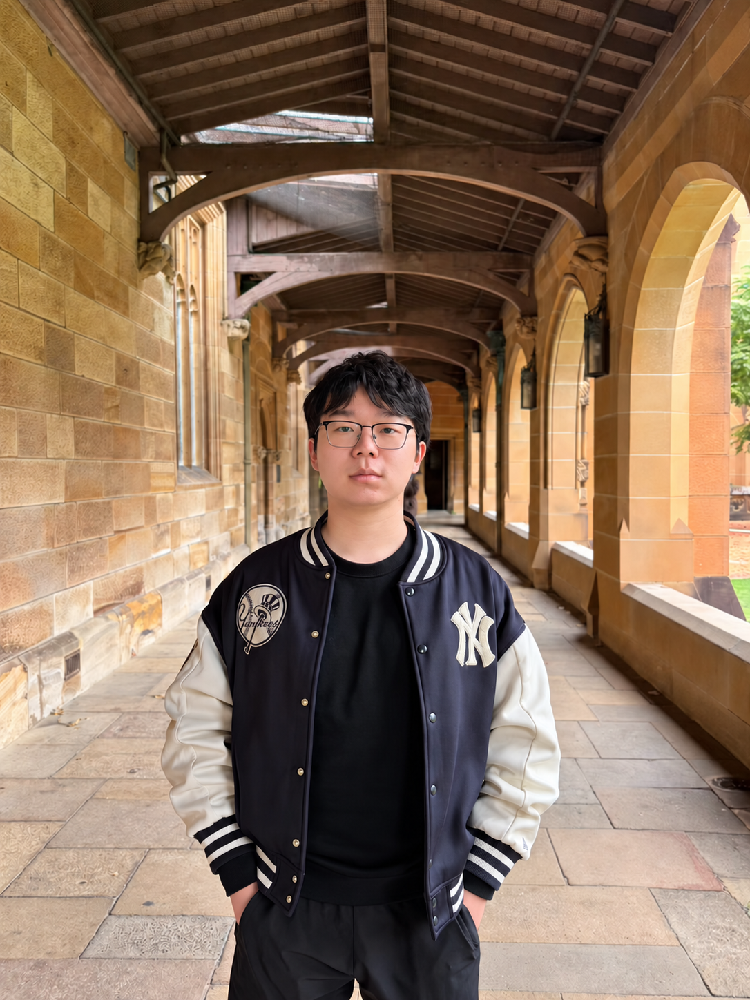

DualWAM: Dual-System World Action Models for Asynchronous Global Planning and Local Refinement
arXiv preprint, 2026
Combines asynchronous global world-action planning with fast local action refinement from wrist-camera observations.
I am a Ph.D. student at the Institute of Automation, Chinese Academy of Sciences, advised by Prof. Dongbin Zhao Prof. Haoran Li and co-advised by Prof. He Wang.
My research interests lie in embodied intelligence and robot learning. I am interested in how robots learn to perceive, understand, and interact with the physical world, with a focus on visual representations, world action models, and robot manipulation.

* Equal contribution
arXiv preprint, 2026
Combines asynchronous global world-action planning with fast local action refinement from wrist-camera observations.
Conference on Robot Learning (CoRL), 2026 · Accepted
Adapts lightweight memory in a frozen world-action model using unlabeled human videos at test time.
Robotics: Science and Systems (RSS), 2026
Jointly learns latent dynamics, visual forecasting, and robot actions from heterogeneous human and robot interaction data.
IEEE Robotics and Automation Letters (RA-L), 2026 · Accepted
Refines pretrained manipulation policies with reinforcement learning inside a frozen diffusion world model.